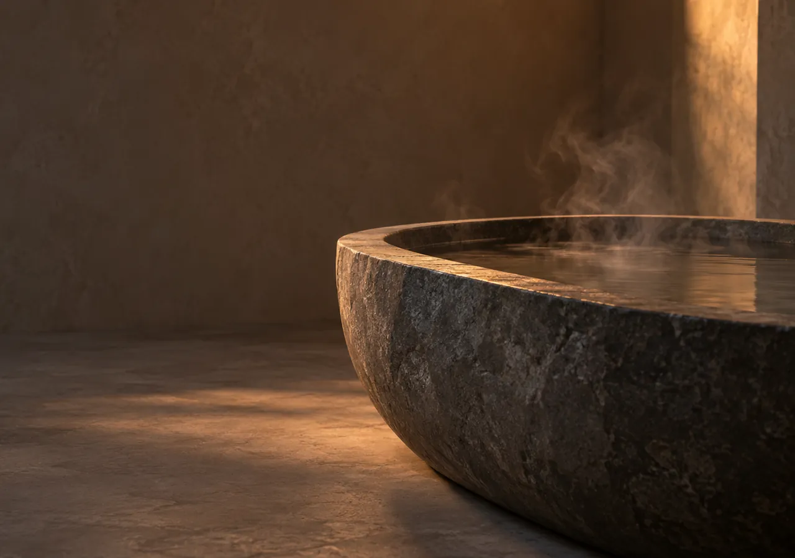

Garden villa
Open to the light, with its own reading corner and a terrace facing the trees.
2 guests / 48 m² / garden
Water outside the window. Quiet inside.
Six villas and not one reason to hurry.

A quiet walk along the forest path. Breathing practice, and breakfast whenever you want it. Time that does not need filling.
Choose a time of day and the photograph, the ritual and the light of the page change with it. Selected: morning.
Two illustrative villa directions.
No real availability or booking.
Open to the light, with its own reading corner and a terrace facing the trees.
2 guests / 48 m² / garden
A private stone bath, warm water at dusk and long evenings with nothing to check.
2–3 guests / 62 m² / stone bathChoose a place, dates and what you would like to do. We will show you an outline of your stay.
This is a demonstration. Nothing is saved or sent anywhere. No real bookings are taken.